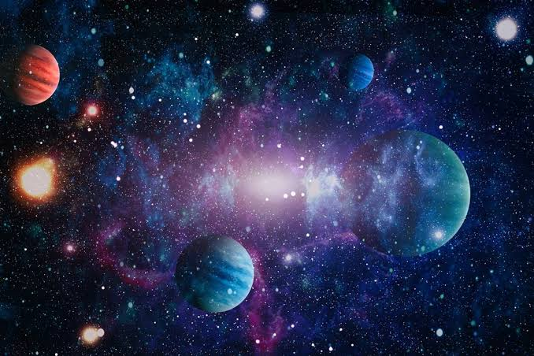
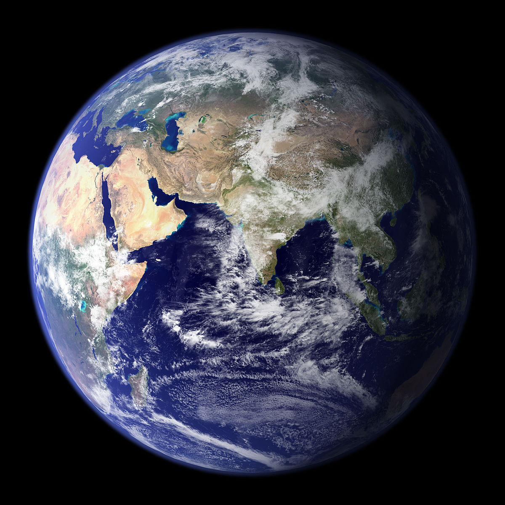
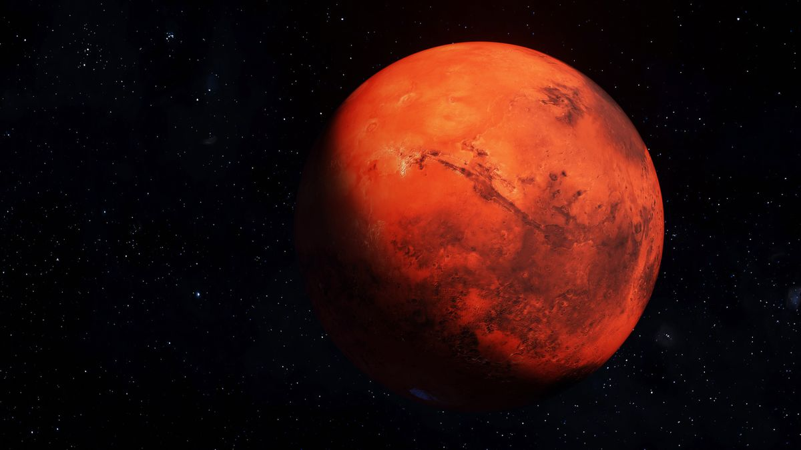
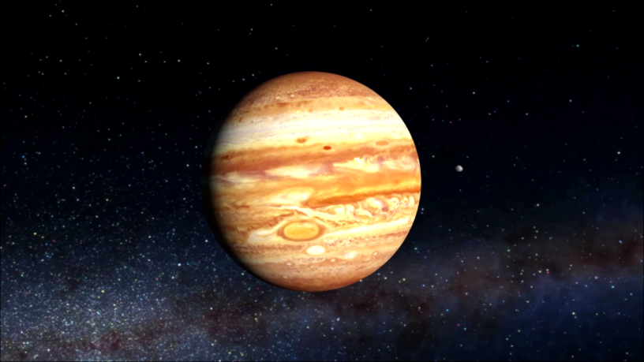
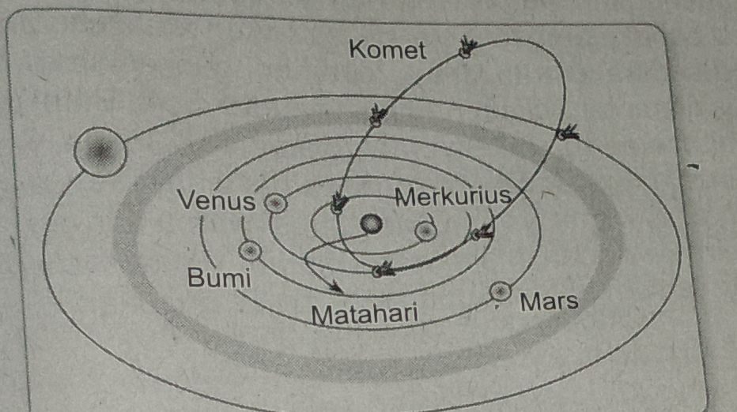

| No | Nama Planet | Jarak rata-rata dati Matahari(juta)km |
|---|---|---|
| 1 | Merkurius | 58 |
| 2 | Venus | 108 |
| 3 | Bumi | 150 |
| 4 | Mars | 150 |
| 5 | Yupiter | 150 |
| 6 | Saturnus | 1.427 |
| 7 | Uranus | 2.870 |
| 8 | Neptunus | 4.497 |
Planet-planet beredar mengelilingi Matahari melalui garis edar lintasan yang disebut orbit. Peredaran planet mengelilingi Matahari disebut revolusi. Waktu yang diperlukan oleh planet untuk melakukan sekali revolusi disebut kala revolusi. Kala revolusi Bumi satu tahun cahaya. Planet-planet beredar pada bidang edar yang hampir berhimpitan satu sama lain. Bidang edar planet Bumi disebut ekliptika.
Bagian planet yang terkena sinar Matahari hanya separuh. Bagian planet yang mendapat cahaya akan mengalami siang, sedangkan yang tidak akan mengalami malam. Demikian juga Bumi mengalami pergantian siang dan malam. Hal ini menunjukan bahwa planet berputar pada sumbunya.
Perputaran planet mengelilingi sumbunya disebut rotasi. Waktu yang diperlukan planet berputar pada sumbunya untuk satu kali rotasi disebut kala rotasi. Anggota tata surya meliputi sebagai berikut.
1.MATAHARI

Matahari merupakan pusat tata surya berupa bola gas yang bercahaya. Matahari merupakan salah satu bintang pada Galaksi Bima Sakti. Suhu permukaan Matahari 6.000 derajat celsius, dipancarkan ke luar angkasa sampai ke permukaan Bumi. Suhu inti Matahari sebesar 15-20 juta derajat celsius.
Meskipun Matahari tampak kecil jika dilihat dari Bumi, namun diameternya 109 kali lebih besar daripada diameter Bumi. Jarak Matahari ke Bumi sekitar 150 juta km sehingga cahaya Matahari menempuh waktu 8 menit 20 detik untuk sampai ke permukaan Bumi dengan kecepatan 300 juta meter per detik.
Matahari bukanlah bola api, melainkan bola gas yang berpijar. Unsur penyusun Matahari yang terbanyak adalah hidrogen (74%). Pada Matahari terjadi reaksi fusi, yaitu reaksi penggabungan dua atom atau lebih inti ringan menjadi suatu inti baru. Akibat reaksi nuklir tersebut, terbentuk energi kalor yang sangat besar dari adanya perubahan massa.
2.PLANET
Planet merupakan benda langit yang mengitari matahari dengan bidang orbit yang eksklusif dan bersih dari objek sekitarnya serta memiliki massa yang cukup untuk gaya gravitasi sehingga mampu mempertahankan bentuknya. Berdasarkan definisi tersebut, ada delapan planet, yaitu Merkurius, Venus, Bumi,Mars,Yupiter, Satumus. Uranus, dan Neptunus.
Para ahli astronomi telah mengelompokkan delapan planet ini berdasarkan hal-hal yang dianggap istimewa, seperti berikut ini
a. Merkurius

Merkurius adalah planet terdekat dari Matahari, jaraknya sekitar 58 juta kilometer dari Matahari. Merkurius tidak mudah dilihat dengan mata telanjang, tetapi sering terlihat di saat fajar dan senja hari sehingga dianggap sebagai bintang pagi dan bintang malam Merkurius bergerak mengelilingi Matahari sekali putaran dalam waktu 88 hari dan berotasi dengan periode 59 hari. Merkurius tidak memiliki satelit.
B.VENUS

Venus merupakan planet terdekat kedua dari Matahari dalam tata surya kita. Jaraknya dari Matahari sekitar 108 juta kilometer. Permukaan planet Ini diselimuti awan tebal karbon dioksida sehingga sulit dilihat. Awan tersebut menahan energi Matahari yang mengenai permukaan Venus sehingga energi tetap terperangkap. Hal ini menyebabkan suhu permukaari planet Venus luar biasa tingginya, sekitar 480°C. Suhu ini cukup panas untuk melebür logam, misalnya aluminium. Venus juga tidak memiliki satelit seperti Merkurius.
C.BUMI
Bumi adalah planet ketiga dalam sistem tata surya Keadaan permukaan Planet Bumi sangat berbeda dibandingkan permukaan Planel Merkurius dan Venus. Suhu dan tekanan di permukaan Bumi memungkinkan air berada dalam wujud padat, cair, maupun gas. Bumi berdiameter sekitar 12.700 km. Rata-rata periode evolusinya 365,25 hari dan periode rotasinya sekitar 24 jam. Bumi memiliki satu satelit, yaitu Bulan
D.MARS
Mars merupakan planet keempat. Mars berukuran lebih kecil dari Bumi, dengan diameter sekitar 6.800 kilometer. Mars memiliki jarak dengan Matahari sekitar 228 juta kilometer, periode revolusi 687 hari, dan berotasi dengan periode sekitar 24,6 jam. Mars memiliki dua satelit, yaitu Phobos dan Delmos.
E.YUPITER
Yupiter merupakan salah satu dari empat raksasa gas dalam sistem tala surya. Planet Yupiter merupakan planet terbesar dalam tata surya. Planet ini banyak mengandung gas amonia (NH) dan gas metana (CH). Yupiter memiliki diameter 141.700 km, dan massa 2,098 x 10 kg. Yupiter merupakan planet yang sering mengalami badai, Badai bintik merah raksasa yang terjadi di atmosfer Yupiter merupakan badai paling dahsyat di tata surya. Badai ini telah berlangsung selama berabad-abad dan mencakup wilayah yang sangat luas.
F.SATURNUS

Raksasa gas kedua dalam tata surya adalah Saturnus. Planet Saturnus mempunyai ciri khusus, yaitu memiliki sabuk cincin raksasa berwana putih yang terdiri atas bongkahan es atau batu kerikil yang dilapisi es. Saturnus merupakan planet terbesar kedua setelah Yupiter, dengan diameter 120.000 km dah massa 6,2845 x 102 kg. Suhu permukaan Saturnus sangat rendah, yaitu -45°C.
G.URANUS
Uranus diselubungi awan tebal sehingga permukaannya sukar diselidiki. Diameter Uranus 50.800 km, massanya 9,603 x 102 kg, sedangkan suhu permu- kaannya-180°C. Uranus adalah planet yang paling ringan di antara planet-planet luar. Planet ini memiliki kelainan ciri orbit, yaitu mengedari Matahari dengan kemiringan poros 90 derajat pada ekliptika. Planet ini memiliki inti yang sangat dingin dibandingkan gas raksasa lainnya dan hanya sedikit memancarkan energi panas.
H.NEPTUNUS
Neptunus merupakan planet yang paling jauh dari Matahari. Neptunus memiliki diameter 48.600 km, massa 1,137 x 10 kg, dan suhu permukaan -200°C. Planet Neptunus tampak berwarna biru kehijauan karena gas metana, hidrogen, dan helium yang terkandung dalam atmosfernya.
Gerakan planet-planet mengitari Matahari disebabkan oleh adanya gaya gravitasi. Secara umum, hukum gravitasi mengatakan bahwa benda-benda yang memiliki massa akan tarik-menarik yang besarnya berbanding terbalik dengan kuadrat jaraknya. Semakin besar jaraknya semakin kecil gaya tariknya dan semakin kecil jaraknya semakin besar gaya tariknya.
Gaya gravitasi Matahari dirumuskan sebagai berikut

Keterangan:
3.Satelit
Satelit adalah benda langit yang bergerak mengelilingi planet dan bersama planet mengelilingi Matahari. Di samping itu, satelit juga berputar pada porosnya. Arah peredaran satelit searah dengan peredaran planetnya. Satelit terdiri atas satelit alami dan satelit buatan.
Nama satelit alami yang dimiliki oleh beberapa planet sebagai berikut.
Satelit buatan merupakan satelit yang dibuat oleh manusia untuk tujuan tertentu.
4.KOMET
Komet merupakan rangkaian cahaya yang bergerak dari satu konstelasi ke konstelası lain di antara bintang binnnka Rangkaian cahaya komet memperlihatkan seperti unjakati rambut panjang. Oleh karena itu, komet sering disebut bintang berekor. Ketika mendekati Matahari, ekor komet selalu berada di depan, menjauhi Matahari. Hal ini disebabkan karena adanya tekanan sorot pada cahaya Matahari yang mendorong partikel-partikel terkecil selalu ke arah yang berlawanan dengan Matahari. Komet terdin atas berbaga gas termasuk di dalamnya adalah sianogen (S/CN), karbon dioksida (CO₂), karbon monoksida (CO), nitrogen (N.), hidroksil (OH), dan nitrogen hidrid (NH). Pergerakan komet tampak dalam pemandangan sebagai lambaian yang indah yang kemudian lenyap begitu saja selama bertahun-tahun. Komet bergerak menjelajahi wilayah langit pada berbagai sudut pada bidang lata surya. Bentuk orbit komet seperti cerutu panjang.
Berikut gambar orbit komet.
Venus Merkurius Bumi Matahari Mars Komet menyemburkan gas bercahaya yang dapat terlihat dari bumi. Bagian-bagian komet, sebagai berikut.
5.Asteroid
Asteroid adalah benda angkasa yang terbesar berukuran beberapa ratus kilometer sampai yang terkecil berukuran kurang dari satu kilometer Keba- nyakan asteroid beredar mengelilingi Matahari dengan orbit di antara planet Mars dan planet Jupiter Kum- pulan asteroid yang beredar dalam lintasan utama tersebut disebut sabuk asteroid.
Asteroid tampak dalam jumlah yang tidak begitu banyak dan beredar di luar lintasan utama. Asteroid yang dinamakan Apollo beredar mengelilingi Matahari dan memotong garis edar bumi. Asteroid terbesar yang diketahui dinamakan Ceres (diambil dari nama dewi pertanian bangsa Romawi) dengan diameter kurang lebih 750 km.
6. Meteorit
Meteoroid adalah batuan-batuan kecil yang sangat banyak dan melayang- layang di angkasa luar Batuan-batuan ini banyak mengandung unsur besi dan nikel. Batuan-batuan ini masuk ke atmosfer bumi karena pengaruh gravitasi Bumi Gesekan dengan atmosfer Bumi menghasilkan panas yang membakar grabis batuan-batuan itu Sebelum sempat mencapai permukaan Bumi. Batuan-batuar habis balda langit yang bergesekan dengan atmosfer Bumi dan habis terbakar sebelu atau beardi permukaan.